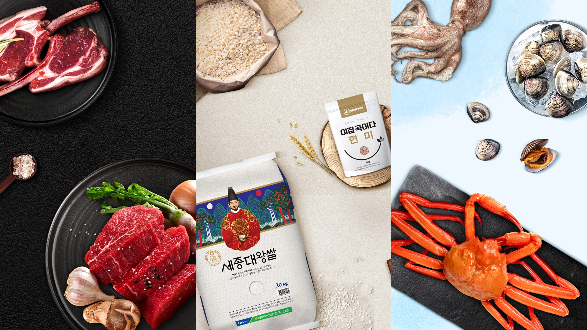
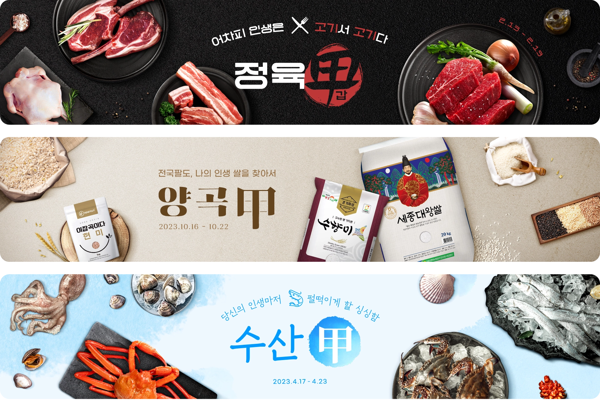
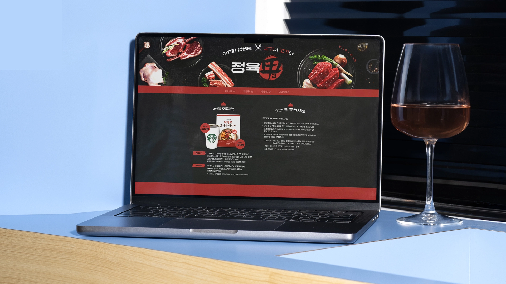

Web Promotion
G마켓의 신선식품관 갑시리즈
갑시리즈는 ‘갑’이라는 타이틀을 활용해 신선 갑, 품질 갑, 가격 갑이라는 슬로건 아래 G마켓의 신선식품을 소개한 프로모션입니다. 각 시리즈는 상품군별 이미지와 배경, 그리고 한자 ‘갑’ 타이틀을 조합하여 통일성 있는 비주얼 아이덴티티를 구축했고, 이를 통해 높은 퀄리티의 시리즈 작업을 완성했습니다.


